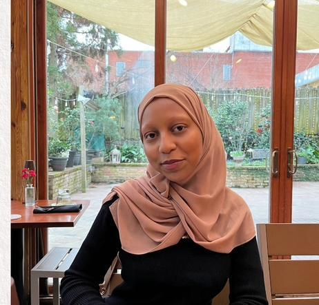

Hafsa Ali
Atlanta, Georgia Chapter Vice President
Hi, my name is Hafsa! I am an IB Diploma Programme student and I play tennis. In my free time, I enjoy reading, writing, and baking.
I am very involved in my community through many different clubs, like NHS and MSA. (Fun fact: I am one of my district's nominees in GHP for Comm Arts!)